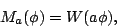
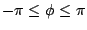
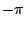
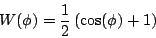
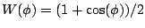
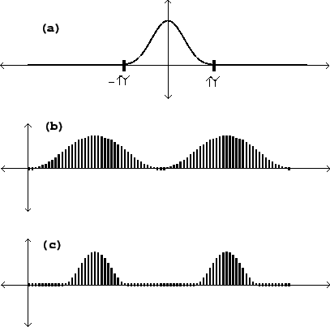
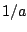

Next: Resulting spectra
Up: Pulse trains
Previous: Pulse trains via waveshaping
Contents
Index
In the wavetable formulation, a pulse train can be made by a stretched
wavetable:

where
 is the phase, i.e., the value wrapped
to lie between  and  . The function
. The function  should be zero at and beyond
the points and , and rise to a maximum at 0. A possible choice for
the function is
should be zero at and beyond
the points and , and rise to a maximum at 0. A possible choice for
the function is

which is graphed in part (a) of Figure 6.4. This is known as the
Hann window function;
it will come up again
in Chapter 9.
Figure:
Pulse width modulation using the von Hann window function: (a) the
function
; (b) the function as a waveform,
repeated at a duty
cycle of 100% (modulation index  ); (c) the waveform at a 50% duty
cycle (
); (c) the waveform at a 50% duty
cycle ( ).
).
|  |
Realizing this as a repeating waveform, we get a succession of (appropriately
sampled) copies of the function , whose duty cycle is
 (parts b and c of the figure).
If you don't wish the copies to overlap the index  must be
at least 1. If you want to allow overlap the simplest strategy is to
duplicate the block diagram (Figure 6.3) out of phase, as described
in Section 2.4 and realized in Section
2.6.
must be
at least 1. If you want to allow overlap the simplest strategy is to
duplicate the block diagram (Figure 6.3) out of phase, as described
in Section 2.4 and realized in Section
2.6.
Next: Resulting spectra
Up: Pulse trains
Previous: Pulse trains via waveshaping
Contents
Index
Miller Puckette
2006-12-30